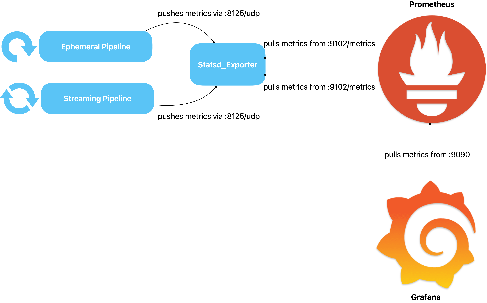
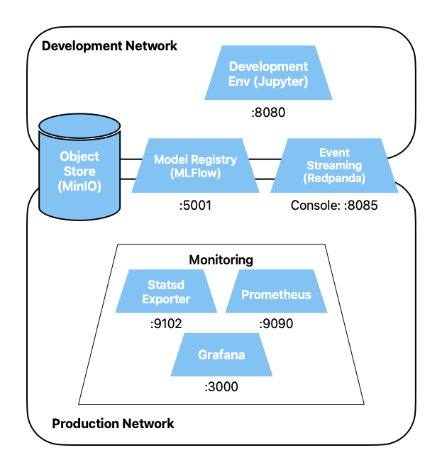

Drift Detection Infrastructure
These tools are already being used by many organizations for collecting metrics, displaying
their progression and for alerting.
Preparation
Save all your open notebooks. Stop all containers by navigating to the top-level
directory of the exercises (where the file docker-compose.yml is located) and
executing docker compose down. If you have the containers running in the foreground,
you can
stop the processes in that terminal with ctrl-c.
Uncomment the monitoring service in the top-level compose file docker-compose.yml.
Start all containers again.
Exercises
Architecture
We will set up the following architecture:

It is important to understand the purpose of the individual components.
- Prometheus: Collects and stores data points and offers its own language
with PromQL to analyze them. Prometheus always actively pulls metrics, which
is great for services that can then simply offer their metrics on a web page in the
format
specified by Prometheus.
- Grafana: Fetches data from various sources and displays them
graphically.
Can send alerts.
- Our batch and streaming pipelines: Calculate and actively push metrics.
- Statsd Exporter: Receives metrics from the pipelines in Statsd format
and provides a corresponding endpoint for Prometheus to pull from.
The Statsd format is a common format for logging metrics. The Statsd_Exporter translates
from this format into a format that Prometheus can understand.
Why is the functionality of the Statsd_Exporter even necessary here?
Suggested solution
If we only had streaming pipelines, the functionality of the Statsd_Exporter would not
technically be necessary. The pipelines could themselves provide a corresponding
endpoint for Prometheus polling, since they run constantly (although whether that would
be good software design is debatable).
For batch pipelines, which are started periodically, run through and then
terminate, the functionality of the Statsd_Exporter is absolutely necessary.
Statsd Service
Look at the compose file of the monitoring services. Via which port can you access Statsd from
outside
Docker?
Suggested solution
From outside Docker you can access via port 9102.
Now look at the mapping file. What four pieces of information do we provide when our pipeline
logs a drift metric?
Suggested solution
You can find the information in the file
prometheus_config/statsd_metrics-mapping.yml. We provide the name of the
dataset
for which we calculate the drift (dataset_name), its
version (dataset_version), the column name in question (column_name) as well as the
designation of the metric we calculate (metric_name).
Now access the metrics page that the Statsd_Exporter provides for Prometheus.
To do this, open the Statsd service web page (port 9102) in Codespaces and
append the URL /metrics. You already see a lot of text without having
logged anything yet. What could this mean?
Suggested solution
These are metrics that the Statsd_Exporter makes available about itself,
so that it can be monitored as a service.
The exporter reads every received string, and if it matches one of the defined mappings,
the (updated) value appears on the /metrics web page and can be
polled by Prometheus.
What must a valid string look like that defines one of our drift metrics?
Suggested solution
The match directive from the mappings file shows the pattern with four
placeholders:
match: "drift_metrics.*.*.*.*"
We can insert arbitrary values for the *, e.g.
drift_metrics.mushroom.v1.cap-diameter.wasserstein
The actual value is appended, separated by a colon. After that follows,
separated by a pipe, the type of the metric. We will see later which types exist.
drift_metrics.mushroom.v1.cap-diameter.wasserstein:42|g
The four labels are used for reformatting into the Prometheus format.
Now try as a test to send the value of a metric to the Statsd_Exporter. To do this, you must
send the above string via UDP to port 8125. The easiest way is via
netcat. However, since the port is not
mapped outside the Docker network (only
expose and not
ports in the
compose file), and netcat may not be installed on the host (the started codespace),
you use a Docker image. Execute the following command:
docker run -i --rm --network=production --name netcat_test subfuzion/netcat -u statsd 8125
Netcat waits for input (no prompt visible), you paste the following string from above
and press Enter.
drift_metrics.mushroom.v1.cap-diameter.wasserstein:42|g
Now go to the StatsD web page again. The metric should now be visible with the value 42
(probably at the top of the page):
drift_metrics{column_name="cap-diameter",dataset_name="mushroom",dataset_version="v1",metric_name="wasserstein"} 42
We see that the exporter has used the information from the mappings file to reformat the
received
metric for Prometheus.
You can stop the still running netcat container using docker stop netcat_test
(for this you need to open a new terminal in Codespaces).
Prometheus Service
Now look at the config file of Prometheus. What do you see?
Suggested solution
Two jobs are defined, so Prometheus collects data from two services.
On the one hand from itself, and on the other hand our drift metrics via Statsd.
Actually, more sources should be defined, namely those of our remaining
services (Jupyter, MinIO, MLFlow, Redpanda, StatsD and the
Grafana that follows below), because we want to monitor every service in a productive
system.
However, we have omitted these for simplicity.
Now open the web page of the Prometheus service (port 9090). Try to display the previously
logged drift metric as a test as well as metrics about Prometheus itself.
Suggested solution
You can for example enter drift_metrics in the query window and
press Execute. Auto-complete also works.
Now also display the configured targets via the status menu. You see the targets defined in the
config file,
prometheus and dataset_metrics.
Grafana
Now access the Grafana service (port 3000). First, create a data source for
Prometheus.
Suggested solution
- Click in the sidebar on the left on Connections -> Data sources and
then on
Add new data source at the top right.
- Search for and select Prometheus
- Set the Prometheus server URL under Connections to
http://prometheus:9090
- Click on Save & test at the very bottom, a green success
message should appear
Next, create a new dashboard and add a visualization to it. Build
a visualization that displays the drift metric in a simple way. You won't
be able to see much yet, because you only have a single data point, the one from the above test.
You
can then expand the dashboard later when we have more data.
Suggested solution
- Dashboards -> New
- Add visualization
- Select Prometheus
- Under Metric in the Select metric dropdown select
drift_metrics
- Press the Run queries button
You now see a small dot or line in the panel and a long
line in the legend (possibly click on Refresh at the top right). This
automatically generated label is somewhat illegible. Under Options we can
adjust this: Legend = Custom, instead of {{label_name}} we set
{{column_name}}.
Now set a Panel Title at the top right and click Save and name the dashboard.
If you like, you can now also add Grafana itself as a source in Prometheus, so that
we can also monitor the Grafana service :-)
Architecture Overview
Our extended architecture (without pipelines) now looks like this.
